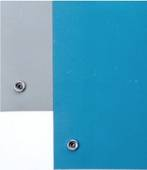
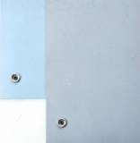

| Dual Layer Rubber Work Surface Mat | |||
|  |
This rubber matting has an easy-to-clean, pebbled surface. The mat's surface resistivity and resistance-to-ground values are in the 106 to 108 (< 1 x 109) ohms range; providing safe, effective dissipation of static charges and meeting ESD Association Guidelines. The dual layer rubber mat's effectiveness and durability provide outstanding long-term value.
|
||
| 3 Layer Vinyl Work Surface Mat | |||
|  |
These three layer vinyl mats provide excellent ESD protection at a low cost. The top layer is a dissipative vinyl with an easy-to-clean embossed texture. The foamed bottom vinyl layer is also dissipative. A buried conductive layer ensures good resistance-to-ground values. Overall thickness is 0.125".
|
||
| Dense Vinyl Tray Mat Work Surface Mat | |||
|
This economical rugged vinyl is twice as dense as our cushioned three layer material. The material was originally developed for tray lining where its toughness and non-skid properties were required. It's durability, low cost and effective dissipation (includes a buried conductive layer) have led to its use in other applications such as table mats.
|
|||
| FM-7000 SERIES FLOOR MAT | |||||||
 Runner System
Runner SystemFM-7006 (top) FM-7005 (middle) FM-7006 (bottom) |
This durable rubber mat is heat and chemical resistant. FM-7000 is available as an interlocking 3' wide runner system or as a stand alone 2' x 3' mat. The molded rubber has beveled edges to reduce tripping hazards common with floor mats. Surface resistivity is less than 9 x 105 ohms/sq.
|
||||||